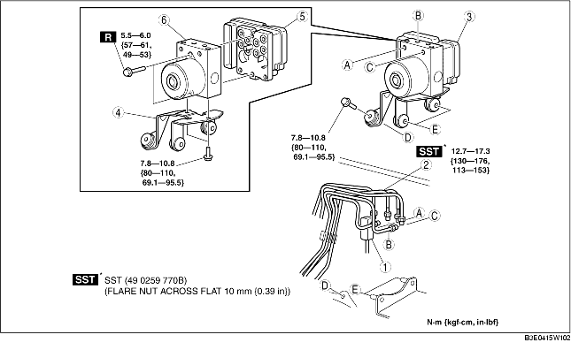

1. Remove the battery and battery tray. (See BATTERY REMOVAL/INSTALLATION [ZJ, Z6].) (See BATTERY REMOVAL/INSTALLATION [LF].)
2. For L.H.D., remove the reserve hose (MTX vehicles). (See Reserve Hose Removal Note.) (See Clutch Pipe and Clutch Reserve Hose Removal Note.) (See Reserve Hose Installation Note.) (See Clutch Pipe and Clutch Reserve Hose Installation Note.)
3. Remove in the order indicated in the table.
4. Install in the reverse order of removal.
5. Perform the initialization procedures for the combined sensor, brake fluid pressure sensor. (See COMBINED SENSOR INITIALIZATION PROCEDURE.) (See BRAKE FLUID PRESSURE SENSOR INITIALIZATION PROCEDURE.)
6. Clear the DTCs from the memory. (See Clearing DTCs Procedures.)

.
|
1
|
Connector
(See Connector Removal Note.)
(See Connector Installation Note.)
|
|
2
|
Brake pipe
(See Brake Pipe Removal Note.)
(See Brake Pipe Installation Note.)
|
|
3
|
DSC HU/CM, bracket
|
|
4
|
Bracket
|
|
5
|
DSC CM
|
|
6
|
DSC HU
|
1. Place an alignment mark on the brake pipe and DSC HU/CM.
2. Apply protective tape to the connector to prevent brake fluid from entering.
3. Remove the brake pipe.
1. As shown in the figure, move the bracket in the direction of the arrow and remove the DSC HU/CM and bracket from the body.
1. Align the marks made before removal and install the brake pipe into the DSC HU/CM referring to the figure.